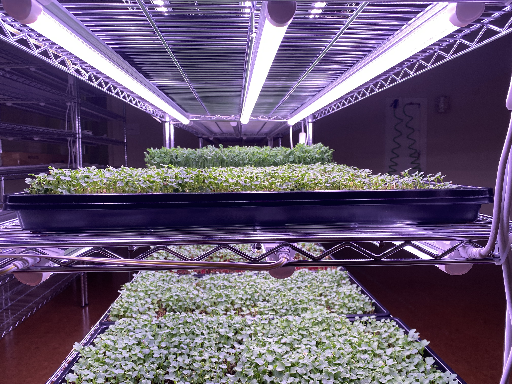
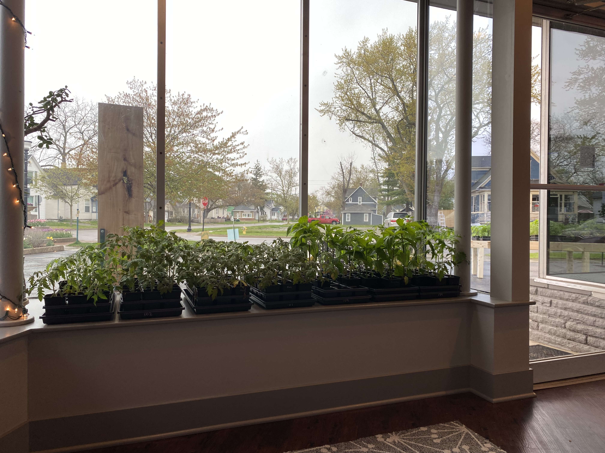
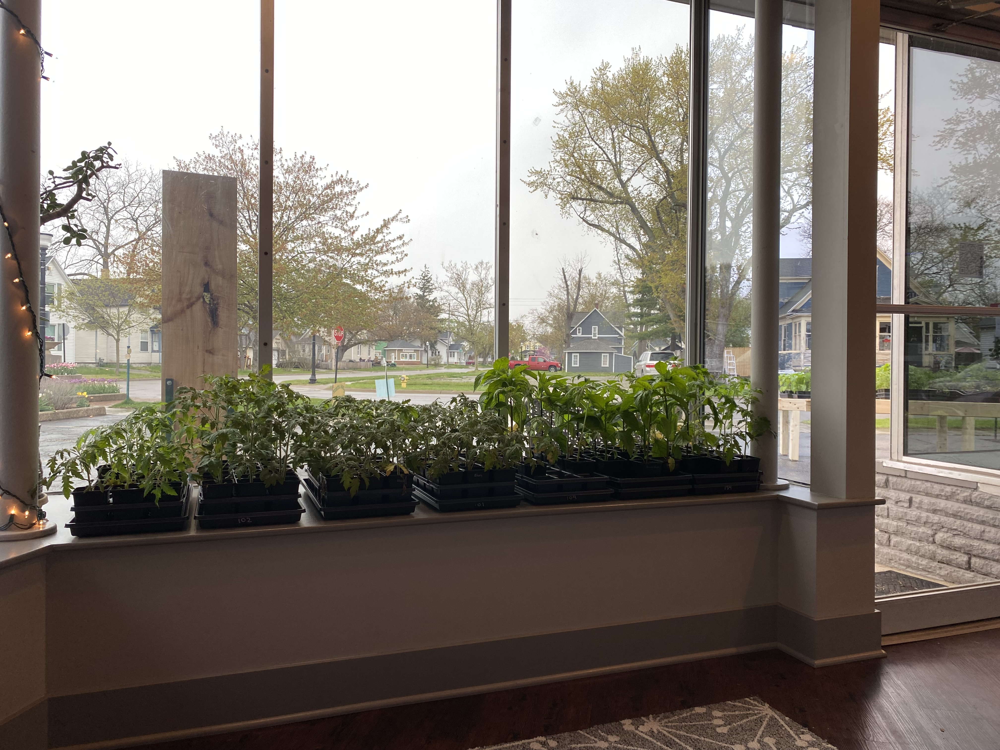
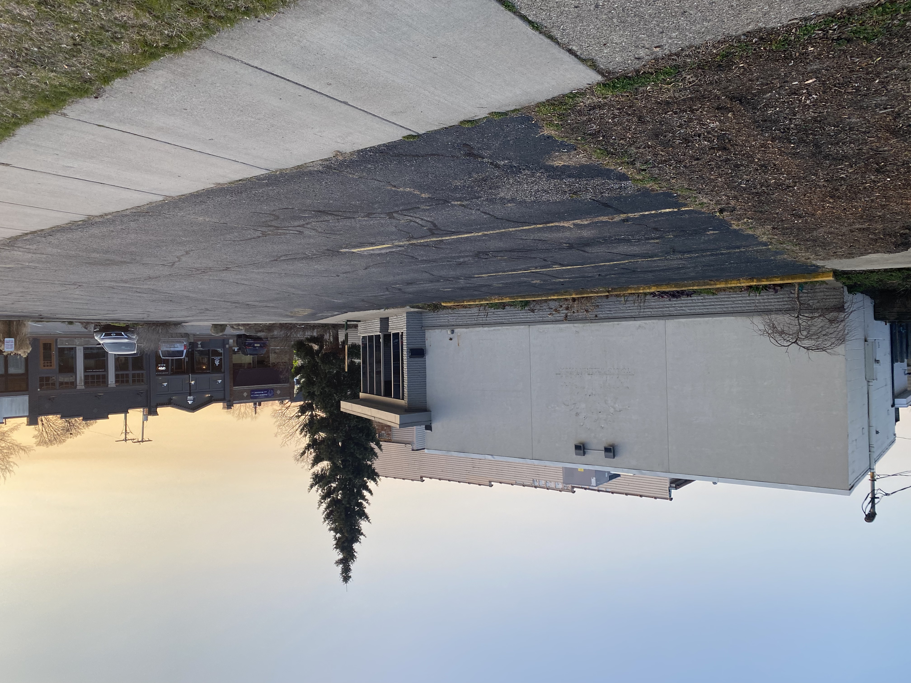

Operations
At Plant Lab everything is an experiment. Our primary focus is growing produce in our indoor facility. But we're also working on using all of our premises in creative ways and filling our little urban corner with as many plant-based ideas as we can.
Indoor Produce
At Plant Lab all our food is grown using Controlled Environment Agriculture (CEA) which for us looks like indoor, year-round farming. We use a combination of traditional and hydroponic growing methods. Our aim is to grow clean, high-quality food that is good for the people who eat it, the people who grow it, and the environment. We carefully control the growing space so we don't need any pesticides or herbicides. We have an extensive food safety plan and follow it closely. We are continually evaluating our inputs and processes, and actively looking for ways to make a better all-around impact on the environment.
Right now most of the produce items we grow are microgreens, leaf lettuce, or culinary herbs. You can get our produce on your table via our farmstand. We are always experimenting and looking to add new items to our production; if there is something specfifc you'd like to see grown in our neighborhood, we'd love to hear about it!
Garden Seedlings
In the spring we offer a selection of seedlings to help stock your garden: tomatoes, peppers, and lots more. We use the best seeds we can find (heirloom/open-pollinated in most cases), some we have saved ourselves and most others we buy from our favorite seed farm in Michigan. Pre-orders are encouraged early in the year and we'll have them ready for pick-up in May once it is time to plant them out into your garden.
 

Outdoor Growing
Part of what we hope to do by putting a farm in the middle of the city is to experiment with how space is used. This means figuring out how to farm an indoor space that was once a yoga studio, and before that several restaurants, and before that a gas station! It also means thinking critically about our outdoor space and how it can best serve us, our neighborhood, and our larger community. When Plant Lab first moved onto this corner, almost 50% of the property was dedicated to parking . . . that is too much!
In 2022 we started reclaiming an area of the parking lot, turning it into a tiny flower farm.
Before

After
On another portion of the property we tend a certified butterfly garden, which was carefully researched and planted by the previous owner. If you come and check it out, you'll find a number of beautiful native species and a TON of pollinators all summer long.